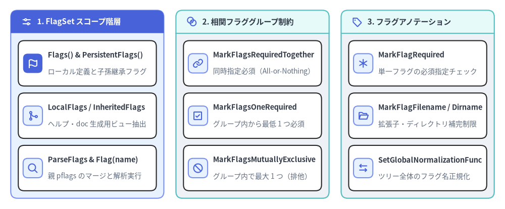
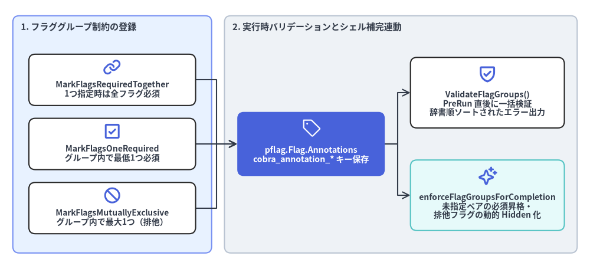

pflag.FlagSet アクセサ・アノテーション・フラググループ
Cobra は github.com/spf13/pflag（POSIX/GNU スタイルのフラグライブラリ）と密結合しており、親子間の階層的フラグ継承（PersistentFlags と Flags）、スコープ別の FlagSet 抽出（LocalFlags, InheritedFlags）、単一・複数フラグ間の相関制約（MarkFlagRequired, MarkFlagsRequiredTogether, MarkFlagsOneRequired, MarkFlagsMutuallyExclusive）、およびファイル・ディレクトリ補完アノテーションを提供します。

Source Code
from drawlib.canvas import save, setup
from drawlib.icons import phosphor
from drawlib.smartarts import CardList, Panel
from drawlib.styles import Colors, Styles
setup(width=188, height=78)
_ = Colors
col_specs = [
(
4.0,
"1. FlagSet スコープ階層",
Styles.PrimaryNeutral,
Styles.PrimaryFlat,
Styles.WhiteBold.patch(text_size=11.0),
phosphor.sliders_horizontal,
Styles.WhiteBold,
[
("Flags() & PersistentFlags()", "ローカル定義と子孫継承フラグ", phosphor.flag, True),
("LocalFlags / InheritedFlags", "ヘルプ・doc 生成用ビュー抽出", phosphor.git_merge, False),
("ParseFlags & Flag(name)", "親 pflags のマージと解析実行", phosphor.magnifying_glass, False),
],
),
(
65.5,
"2. 相関フラググループ制約",
Styles.Neutral,
Styles.SecondaryNeutral,
Styles.DarkBold.patch(text_size=11.0),
phosphor.intersect,
Styles.PrimaryBold,
[
("MarkFlagsRequiredTogether", "同時指定必須（All-or-Nothing）", phosphor.link, False),
("MarkFlagsOneRequired", "グループ内から最低 1 つ必須", phosphor.check_square, False),
("MarkFlagsMutuallyExclusive", "グループ内で最大 1 つ（排他）", phosphor.prohibit, False),
],
),
(
127.0,
"3. フラグアノテーション",
Styles.Neutral,
Styles.SecondaryNeutral,
Styles.DarkBold.patch(text_size=11.0),
phosphor.tag,
Styles.PrimaryBold,
[
("MarkFlagRequired", "単一フラグの必須指定チェック", phosphor.asterisk, False),
("MarkFlagFilename / Dirname", "拡張子・ディレクトリ補完制限", phosphor.folder_open, False),
("SetGlobalNormalizationFunc", "ツリー全体のフラグ名正規化", phosphor.arrows_left_right, False),
],
),
]
for x0, title, body_style, hdr_style, hdr_text_style, hdr_icon, hdr_icon_style, items in col_specs:
panel = Panel(
title,
"",
style=body_style,
header_style=hdr_style,
text_style=hdr_text_style,
icon=hdr_icon,
icon_style=hdr_icon_style,
header_variant="filled",
header_height=8.5,
)
panel.draw((x0, 4.0), width=57.0, height=70.0, align="bottom_left")
inner_xy, inner_w, inner_h = panel.get_content_box(
(x0, 4.0),
width=57.0,
height=70.0,
padding=(2.8, 2.8),
align="bottom_left",
)
cards = CardList(
style=Styles.White,
text_style=Styles.DarkBold.patch(text_size=10.5),
description_style=Styles.Muted.patch(text_size=10.0),
badge_shape="rounded_rect",
badge_style=Styles.PrimaryNeutral,
icon_style=Styles.PrimaryBold,
direction="vertical",
spacing=2.6,
)
for mod_name, mod_desc, mod_icon, is_focal in items:
if is_focal:
cards.add(
mod_name,
mod_desc,
icon=mod_icon,
badge_style=Styles.PrimaryFlat,
icon_style=Styles.WhiteBold,
)
else:
cards.add(mod_name, mod_desc, icon=mod_icon)
cards.draw(inner_xy, width=inner_w, height=inner_h, align="bottom_left")
save()
methodpflag.FlagSet アクセサ・フラグ解析メソッド#
各 *Command は内部に 5 つの *pflag.FlagSet ポインタ（flags, pflags, lflags, iflags, parentsPflags）を保持し、スコープ別の取得・マージ・解析メソッドを公開しています（command.go:L326-L330, L380-L390, L544-L558, L1216-L1258, L1499-L1538, L1681-L1890）。
// 主要 FlagSet アクセサ
func (c *Command) Flags() *pflag.FlagSet
func (c *Command) PersistentFlags() *pflag.FlagSet
func (c *Command) LocalFlags() *pflag.FlagSet
func (c *Command) LocalNonPersistentFlags() *pflag.FlagSet
func (c *Command) InheritedFlags() *pflag.FlagSet
func (c *Command) NonInheritedFlags() *pflag.FlagSet
// 検索・解析・初期化・正規化メソッド
func (c *Command) Flag(name string) (flag *pflag.Flag)
func (c *Command) ParseFlags(args []string) error
func (c *Command) ResetFlags()
func (c *Command) InitDefaultHelpFlag()
func (c *Command) InitDefaultVersionFlag()
func (c *Command) DebugFlags()
func (c *Command) SetFlagErrorFunc(f func(*Command, error) error)
func (c *Command) FlagErrorFunc() (f func(*Command, error) error)
func (c *Command) SetGlobalNormalizationFunc(n func(f *pflag.FlagSet, name string) pflag.NormalizedName)
func (c *Command) GlobalNormalizationFunc() func(f *pflag.FlagSet, name string) pflag.NormalizedName
| メソッド | 返却 / 操作対象セット | 説明 |
|---|---|---|
Flags() |
c.flags (*pflag.FlagSet) |
コマンド c のメイン FlagSet を返します。mergePersistentFlags() 実行前は c のローカルフラグのみを保持し、mergePersistentFlags() 実行後（ParseFlags, LocalFlags, Usage, MarkFlags* 呼び出し時）は c のローカルフラグ + c.PersistentFlags() + 全親コマンドの PersistentFlags()（および Root() 上の pflag.CommandLine）が統合された完全セットとなります。 |
PersistentFlags() |
c.pflags (*pflag.FlagSet) |
c 自身および c 配下の全サブコマンドへ継承される永続 FlagSet を返します。 |
LocalFlags() |
c.lflags (*pflag.FlagSet) |
c.mergePersistentFlags() を実行した上で、親から継承されたフラグを除き c 自身で定義されたフラグ（c.Flags() と c.PersistentFlags() の両方、および親フラグをシャドーイングした同名フラグ）を返します。標準 Usage テンプレートの Flags: 欄に出力されます。 |
LocalNonPersistentFlags() |
新規 *pflag.FlagSet |
c.LocalFlags() のうち、c.PersistentFlags() に含まれない純粋なローカル専用フラグのみを格納した新しい FlagSet を返します。 |
InheritedFlags() |
c.iflags (*pflag.FlagSet) |
c.mergePersistentFlags() を実行し、親コマンドから継承された永続フラグ（c.parentsPflags）のうち c.LocalFlags() で上書きされていないものを返します。標準 Usage テンプレートの Global Flags: 欄に出力されます。 |
NonInheritedFlags() |
c.LocalFlags() |
c.LocalFlags() のエイリアスです。cobra/doc 生成器（md_docs.go, man_docs.go, rest_docs.go）から呼び出されます。 |
Flag(name string) |
*pflag.Flag |
c.Flags().Lookup(name) を検索し、見つからない場合は c.persistentFlag(name) で自身と親ツリー全体の PersistentFlags を再帰検索します。未定義時は nil を返します。 |
ParseFlags(args []string) |
error |
c.DisableFlagParsing == true の場合は何もせず nil を返します。通常時は c.mergePersistentFlags() を呼び、c.FParseErrWhitelist を c.Flags().ParseErrorsAllowlist へ反映してから c.Flags().Parse(args) を実行します。 |
ResetFlags() |
void |
c.flagErrorBuf をクリアし、c.flags と c.pflags を空の FlagSet で再初期化し、c.lflags, c.iflags, c.parentsPflags を nil にリセットします。 |
InitDefaultHelpFlag() |
void |
c.Flags() に "help" が未定義の場合、-h, --help（bool）フラグを自動追加し、FlagSetByCobraAnnotation を付与します。 |
InitDefaultVersionFlag() |
void |
c.Version != "" かつ "version" フラグが未定義の場合、--version（-v が空いていれば -v 短縮形付き）を自動追加し、FlagSetByCobraAnnotation を付与します。 |
DebugFlags() |
void |
c と全子孫コマンドのローカル（[L]）・永続（[P]）・ローカル兼永続（[LP]）フラグ一覧を c.Println() でデバッグ出力します。 |
SetFlagErrorFunc / FlagErrorFunc |
func(*Command, error) error |
execute() 内で c.ParseFlags(a) がエラーを返した際に呼び出されるエラー変換関数を設定・取得します（未設定時は親から継承）。 |
SetGlobalNormalizationFunc / GlobalNormalizationFunc |
func(*pflag.FlagSet, string) pflag.NormalizedName |
フラグ名の正規化関数（例：_ を - に統一する関数）を c.Flags()、c.PersistentFlags()、およびすべての子コマンドへ再帰的に設定します。 |
methodFlagSet の有無・可視性判定メソッド#
command.go（L1800-L1841）には、フラグが 1 つでも定義されているかを判定する Has*Flags() 4 メソッドと、Hidden / Deprecated でない表示可能なフラグが存在するかを判定する HasAvailable*Flags() 4 メソッドが用意されています。
func (c *Command) HasFlags() bool
func (c *Command) HasPersistentFlags() bool
func (c *Command) HasLocalFlags() bool
func (c *Command) HasInheritedFlags() bool
func (c *Command) HasAvailableFlags() bool
func (c *Command) HasAvailablePersistentFlags() bool
func (c *Command) HasAvailableLocalFlags() bool
func (c *Command) HasAvailableInheritedFlags() bool
| 判定メソッドペア | 検査対象の FlagSet |
Has* と HasAvailable* の違い |
|---|---|---|
HasFlags() / HasAvailableFlags() |
c.Flags() |
HasFlags() は全フラグ対象。HasAvailableFlags() は隠し・非推奨フラグを除外して判定し、UseLine() が末尾に [flags] を付与するかの判断に使われます。 |
HasPersistentFlags() / HasAvailablePersistentFlags() |
c.PersistentFlags() |
c.PersistentFlags() 内のフラグ有無・可視フラグ有無を判定します。 |
HasLocalFlags() / HasAvailableLocalFlags() |
c.LocalFlags() |
HasAvailableLocalFlags() はヘルプ出力で Flags: セクションを表示するかどうかの判定に使われます。 |
HasInheritedFlags() / HasAvailableInheritedFlags() |
c.InheritedFlags() |
HasAvailableInheritedFlags() はヘルプ出力で Global Flags: セクションを表示するかどうかの判定に使われます。 |

Source Code
from drawlib.canvas import save, setup
from drawlib.diagrams.architecture import ArchitectureDiagram, Node, NodeGroup, PhosphorIcon
from drawlib.styles import Colors, Styles
setup(width=184, height=84)
_ = Colors
d = ArchitectureDiagram(
node_style=Styles.PrimaryBold,
node_text_style=Styles.DarkBold.patch(text_size=10.0),
edge_style=Styles.DarkBold.patch(line_width=1.5),
edge_text_style=Styles.Dark.patch(text_size=9.8),
node_card_style=Styles.White,
)
decl_grp = d.add(
NodeGroup(
"1. フラググループ制約の登録",
width=62,
height=74,
style=Styles.PrimaryNeutral.patch(shape_r=2.0),
text_style=Styles.DarkBold.patch(text_size=10.8, halign="left", valign="top"),
),
xy=(4.0, 5.0),
)
req_tog = decl_grp.add(
Node(
"MarkFlagsRequiredTogether\n1つ指定時は全フラグ必須",
icon=PhosphorIcon.LINK,
icon_size=5.8,
width=52,
height=16,
card_style=Styles.White.patch(shape_r=2.0),
),
xy=(31.0, 54.0),
)
one_req = decl_grp.add(
Node(
"MarkFlagsOneRequired\nグループ内で最低1つ必須",
icon=PhosphorIcon.CHECK_SQUARE,
icon_size=5.8,
width=52,
height=16,
card_style=Styles.White.patch(shape_r=2.0),
),
xy=(31.0, 34.0),
)
mut_excl = decl_grp.add(
Node(
"MarkFlagsMutuallyExclusive\nグループ内で最大1つ（排他）",
icon=PhosphorIcon.PROHIBIT,
icon_size=5.8,
width=52,
height=16,
card_style=Styles.White.patch(shape_r=2.0),
),
xy=(31.0, 14.0),
)
exec_grp = d.add(
NodeGroup(
"2. 実行時バリデーションとシェル補完連動",
width=110,
height=74,
style=Styles.Neutral.patch(shape_r=2.0),
text_style=Styles.DarkBold.patch(text_size=10.8, halign="left", valign="top"),
),
xy=(70.0, 5.0),
)
annot_node = exec_grp.add(
Node(
"pflag.Flag.Annotations\ncobra_annotation_* キー保存",
icon=PhosphorIcon.TAG,
icon_size=6.2,
width=46,
height=20,
style=Styles.White,
text_style=Styles.WhiteBold.patch(text_size=10.2),
card_style=Styles.PrimaryFlat.patch(shape_r=2.0),
),
xy=(27.0, 34.0),
)
val_node = exec_grp.add(
Node(
"ValidateFlagGroups()\nPreRun 直後に一括検証\n辞書順ソートされたエラー出力",
icon=PhosphorIcon.SHIELD_CHECK,
icon_size=6.0,
width=48,
height=22,
card_style=Styles.White.patch(shape_r=2.0),
),
xy=(82.0, 50.0),
)
comp_node = exec_grp.add(
Node(
"enforceFlagGroupsForCompletion\n未指定ペアの必須昇格・\n排他フラグの動的 Hidden 化",
icon=PhosphorIcon.SPARKLE,
icon_size=6.0,
width=48,
height=22,
card_style=Styles.SecondaryNeutral.patch(shape_r=2.0),
),
xy=(82.0, 18.0),
)
d.connect(req_tog, annot_node)
d.connect(one_req, annot_node)
d.connect(mut_excl, annot_node)
d.connect(annot_node, val_node)
d.connect(annot_node, comp_node)
d.draw((0.0, 0.0))
save()
method相関フラググループ API (flag_groups.go)#
相関フラググループ API は、複数フラグ間の論理関係（同時必須・最低 1 つ必須・相互排他）を宣言的に定義し、コマンド実行時（ValidateFlagGroups()）とシェル補完時（enforceFlagGroupsForCompletion()）の両方で自動適用します。
func (c *Command) MarkFlagsRequiredTogether(flagNames ...string)
func (c *Command) MarkFlagsOneRequired(flagNames ...string)
func (c *Command) MarkFlagsMutuallyExclusive(flagNames ...string)
func (c *Command) ValidateFlagGroups() error
func (c *Command) ValidateRequiredFlags() error
| メソッド | 内部アノテーションキーと Panic 条件 | 実行時エラーメッセージ (ValidateFlagGroups) とシェル補完時の挙動 |
|---|---|---|
MarkFlagsRequiredTogether(flagNames ...string) |
c.mergePersistentFlags() を呼び、各フラグの "cobra_annotation_required_if_others_set" にスペース区切りのグループ文字列を追加します。c.Flags() に存在しないフラグ名が含まれると panic します。 |
エラー: "if any flags in the group [%v] are set they must all be set; missing %v"（不足フラグは辞書順ソート）。補完時: グループ内の 1 つでも入力済みになると、残りの全フラグを動的に MarkFlagRequired に昇格させて優先提案します。 |
MarkFlagsOneRequired(flagNames ...string) |
"cobra_annotation_one_required" にグループ文字列を追加します。未定義フラグ指定時は panic します。 |
エラー: グループ内のフラグが 1 つも指定されていない場合に "at least one of the flags in the group [%v] is required" を返します。補完時: いずれも未入力の間、グループ内の全フラグを必須フラグとして優先提案します。 |
MarkFlagsMutuallyExclusive(flagNames ...string) |
"cobra_annotation_mutually_exclusive" にグループ文字列を追加します。未定義フラグ指定時は panic します。 |
エラー: グループ内で 2 つ以上が同時指定された場合に "if any flags in the group [%v] are set none of the others can be; %v were all set" を返します。補完時: 1 つが入力済みになると、他の排他フラグの flag.Hidden = true を動的に設定して補完候補から隠します（指定済みフラグ自体はスライス型等の反復指定のため維持されます）。 |
ValidateFlagGroups() |
c.Flags() の 3 種のアノテーションを走査 |
c.DisableFlagParsing == true の場合は nil。RequiredTogether -> OneRequired -> MutuallyExclusive の順に検証し、最初のエラーを返します。hasAllFlags() により全メンバーが c.Flags() に揃っているグループのみを評価します。 |
ValidateRequiredFlags() |
c.Flags() の BashCompOneRequiredFlag ("true") を走査 |
c.DisableFlagParsing == true の場合は nil。必須フラグが未指定（!pflag.Changed）の場合に required flag(s) "foo", "bar" not set を返します。 |
使用例：MarkFlagsRequiredTogether・MarkFlagsOneRequired・MarkFlagsMutuallyExclusive の組み合わせ#
// 認証設定: (--username と --password のペア) または --token のいずれか一方が必須で、両方は同時指定不可
loginCmd.Flags().String("username", "", "Account username")
loginCmd.Flags().String("password", "", "Account password")
loginCmd.Flags().String("token", "", "Bearer API token")
loginCmd.MarkFlagsRequiredTogether("username", "password")
loginCmd.MarkFlagsOneRequired("username", "token")
loginCmd.MarkFlagsMutuallyExclusive("username", "token")
func単一フラグ必須化とファイル・ディレクトリ補完アノテーション (shell_completions.go)#
shell_completions.go（L21-L98）では、*Command のメソッド版（c.Flags() または c.PersistentFlags() を対象）と、任意の *pflag.FlagSet を直接受け取るパッケージ関数版の両方が公開されています。
// 単一フラグ必須化アノテーション
func (c *Command) MarkFlagRequired(name string) error
func (c *Command) MarkPersistentFlagRequired(name string) error
func MarkFlagRequired(flags *pflag.FlagSet, name string) error
// ファイル拡張子フィルタリングアノテーション (ShellCompDirectiveFilterFileExt)
func (c *Command) MarkFlagFilename(name string, extensions ...string) error
func (c *Command) MarkPersistentFlagFilename(name string, extensions ...string) error
func MarkFlagFilename(flags *pflag.FlagSet, name string, extensions ...string) error
// ディレクトリ限定補完アノテーション (ShellCompDirectiveFilterDirs)
func (c *Command) MarkFlagDirname(name string) error
func (c *Command) MarkPersistentFlagDirname(name string) error
func MarkFlagDirname(flags *pflag.FlagSet, name string) error
// レガシー Bash カスタム補完関数アノテーション
func (c *Command) MarkFlagCustom(name string, f string) error
func MarkFlagCustom(flags *pflag.FlagSet, name string, f string) error
| メソッド / パッケージ関数 | 付与される pflag.Flag.Annotations キー |
設定値と実行時・シェル補完時の効果 |
|---|---|---|
c.MarkFlagRequired(name)cobra.MarkFlagRequired(flags, name) |
BashCompOneRequiredFlag |
[]string{"true"} を設定します。シェル補完で優先表示され、未指定時に ValidateRequiredFlags() がエラーを返します。フラグが存在しない場合は error を返します。 |
c.MarkPersistentFlagRequired(name) |
BashCompOneRequiredFlag |
c.PersistentFlags() 上のフラグに []string{"true"} を設定し、c および全サブコマンドで必須化します。 |
c.MarkFlagFilename(name, exts...)c.MarkPersistentFlagFilename(name, exts...)cobra.MarkFlagFilename(flags, name, exts...) |
BashCompFilenameExt |
指定された拡張子スライス（例："yaml", "yml", "json"）を設定し、シェル補完候補を該当拡張子のファイルに絞り込みます（ShellCompDirectiveFilterFileExt）。extensions を省略すると任意のファイル名を補完します。 |
c.MarkFlagDirname(name)c.MarkPersistentFlagDirname(name)cobra.MarkFlagDirname(flags, name) |
BashCompSubdirsInDir |
[]string{} を設定し、フラグ値のシェル補完候補をディレクトリ名のみに制限します（ShellCompDirectiveFilterDirs）。 |
c.MarkFlagCustom(name, f)cobra.MarkFlagCustom(flags, name, f) |
BashCompCustom |
[]string{f} を設定します。レガシーな Bash V1 補完専用のため、Bash V2 / Zsh / Fish / PowerShell 全対応には c.RegisterFlagCompletionFunc(name, fn)（05. シェル補完 V2 参照）を使用してください。 |